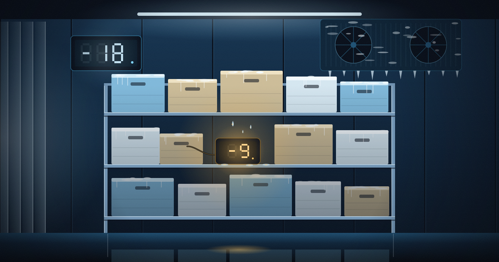
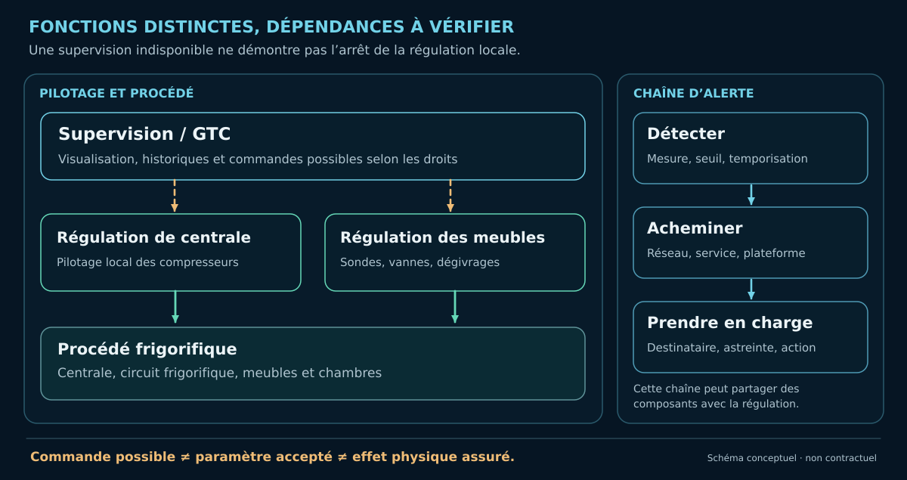
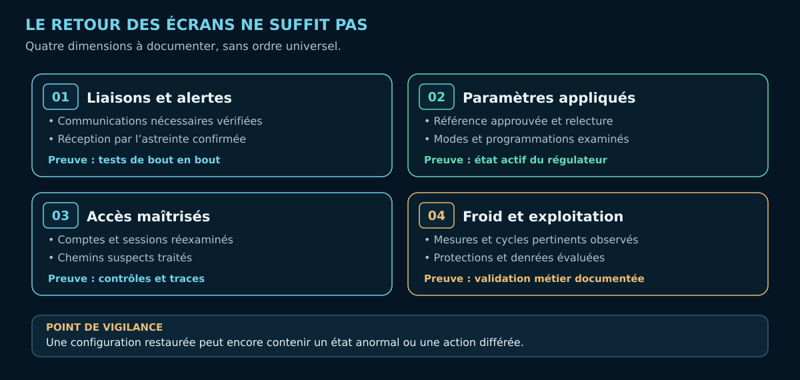

Cyber-résilience du froid commercial : que reste-t-il quand la supervision n'est plus fiable ?
Régulation locale, effets différés, sauvegardes et reconstruction : comment démontrer le retour à un état frigorifique fiable ?
Sur cette page
Le superviseur répond à nouveau. Les courbes s'affichent, les équipements semblent communiquer. Le froid est-il pour autant revenu à un état fiable ?
Le retour de l'interface est un premier indice. La régulation locale, les paramètres réellement appliqués, la transmission des alarmes et les sauvegardes demandent chacun leurs propres vérifications.
L'analyse des capacités d'action examine les identités, leurs privilèges et le périmètre des commandes possibles. Ici, nous cherchons quelles fonctions restent opérationnelles, ce qui peut être reconstruit et quelles preuves permettent de valider la reprise.
Les incidents d'octobre 2026 rendent ces questions concrètes. Le CERT-FR rappelle notamment qu'une intervention sur les accès distants peut perturber la remontée d'informations vers le frigoriste. La fermeture d'un accès doit ainsi s'accompagner d'une vérification du procédé et de la chaîne d'alerte.

1. L'écran ne dit pas tout
Deux situations, un même piège : se fier à l'écran pour juger du froid.
- Plus de télésurveillance : les températures et alarmes ne remontent plus, mais certains régulateurs continuent à piloter les meubles.
- Interface toujours accessible : les courbes peuvent être anciennes, une consigne altérée ou une alarme mal transmise.
Mesurer, réguler, produire du froid et alerter sont quatre fonctions distinctes. L'une peut être indisponible tandis qu'une autre continue de fonctionner. La disponibilité de l'interface ne prouve pas la fiabilité de ce qu'elle affiche.
Une sonde mesure la température à son emplacement, souvent celle de l'air, pas l'historique thermique des denrées. Leur conservation dépend aussi de la durée d'exposition et des conditions d'exploitation : une mesure ponctuelle ne reconstitue pas cette histoire. Il faut donc établir ce qui fonctionne encore, ce qui est devenu invisible et comment le vérifier autrement.
2. Reconstruire les dépendances du froid
Un plan réseau ne raconte qu'une partie de l'installation. Pour comprendre sa résilience, il faut suivre la chaîne fonctionnelle : sonde → régulateur → actionneur → procédé, puis les échanges éventuels avec la centrale, le superviseur et l'astreinte.
Les régulateurs pilotent localement certaines fonctions, selon le matériel. Le superviseur, parfois intégré à une GTC, collecte les états, historise les données et peut transmettre des réglages. Lorsqu'elle existe, la télésurveillance ajoute ses propres dépendances : réseau, plateforme distante et transmission des alertes.
« Local » ne signifie pas « indépendant ». Les Dixell XM669K/XM679K peuvent synchroniser consignes et dégivrages sur leur liaison LAN de régulateurs : une liaison de terrain, pas une preuve d'accès par Internet. Chez Danfoss, l'AK-CC 550 et le superviseur AK-SM 800 remplissent des rôles distincts. Les paramètres et le câblage du site déterminent ce qui reste autonome.

De quoi dépend chaque fonction pour continuer à agir ? Consigne partagée, bus de terrain, sonde ou alimentation commune : ces dépendances peuvent changer le comportement en cas de panne. Sans examen des modèles, paramètres et câblages du site, aucun mode de repli ne peut être garanti.
3. Une commande peut produire des effets plus tard
Une consigne modifiée n'a pas toujours d'effet immédiat : le procédé possède une inertie thermique. Un dégivrage programmé peut ainsi se déclencher après la fermeture de l'accès compromis, sans nouvelle commande de l'attaquant.
Le manuel des XM669K/XM679K décrit également des synchronisations entre sections et des modes de repli en cas de défaut de sonde. Leur activation sur un site particulier reste à démontrer. L'effet différé d'un paramètre n'atteste pas non plus qu'une nouvelle commande a été transmise au moment où la température a changé.
Si la température dérive alors que l'accès suspect est fermé, quatre traces sont à confronter :
- Valeurs : paramètres réellement appliqués aux régulateurs ;
- Modes : programmes, dégivrages et fonctionnement en cours ;
- Chronologie : commandes et événements disponibles dans les journaux ;
- Terrain : évolution physique des températures et équipements.
Même si les journaux ne permettent plus d'attribuer une modification, ses conséquences sur le procédé restent à rechercher.
C'est pourquoi révoquer un accès compromis et retrouver un état frigorifique maîtrisé sont deux opérations différentes.
4. Quelles protections tiennent encore ?
Une limite de réglage, une alarme et une sécurité de pression ne protègent pas le même objectif. Une sécurité peut préserver un compresseur sans garantir les denrées ; une alarme locale peut ne jamais parvenir à l'astreinte. Et deux interfaces distinctes peuvent dépendre du même capteur ou compte d'administration.
La question est double : quelle conséquence chaque protection évite-t-elle, et qui peut la modifier ?
Dans le manuel XWEB EVO v5.6.0, le mode maintenance amène XWEB à ignorer les alarmes des instruments concernés. La supervision cesse alors de prendre ces alarmes en compte ; cela ne prouve pas la disparition des protections locales. De même, une alarme de perte de liaison renseigne sur une communication interrompue, pas sur l'arrêt du froid.
Une alerte doit être vérifiée de la mesure jusqu'à sa prise en charge par l'astreinte. Pour parler de surveillance indépendante, il faut aussi examiner les capteurs, les réseaux, les droits et les alimentations partagés.
Toute coupure d'accès ou intervention pouvant perturber le procédé doit être préparée avec le frigoriste. La priorité reste la sécurité du froid et des denrées, pas le retour des écrans.
5. Sauvegardes : sait-on vraiment reconstruire l'installation ?
« Nous avons une sauvegarde. » De quoi exactement, conservée où, et déjà restaurée avec succès ?
Trois périmètres doivent être distingués :
- Supervision : équipements déclarés, comptes, alarmes, programmes et, selon la version et les options, journaux ou historiques.
- Régulateurs : consignes, limites, dégivrages et paramètres effectivement appliqués, à récupérer et vérifier selon les procédures du constructeur.
- Moyens d'intervention : logiciels, firmwares, schémas, PC froid, accès réseau et cellulaire, comptes, secrets et contacts d'astreinte. Sans eux, la sauvegarde peut être inutilisable.
La documentation XWEB EVO décrit des opérations de sauvegarde et de restauration dont le contenu dépend des données sélectionnées. Chez Danfoss, la base du superviseur et les réglages des régulateurs imposent de respecter le sens des échanges Upload/Download, évoqué plus loin. Un export réussi ne prouve pas que toute l'installation pourra être reconstituée.
Une copie conservée sur le superviseur, accessible avec les mêmes comptes compromis, peut disparaître avec lui. Pour reconstruire, les sauvegardes doivent être :
- Protégées : hors de portée des mêmes comptes compromis ; l'ANSSI recommande notamment la stratégie 3-2-1, avec une copie hors ligne ;
- Restaurables : exercices de récupération, accès aux outils et aux références nécessaires ;
- Adaptées au métier : fréquence et délais de reprise compatibles avec la continuité du froid.
Les comptes d'administration des sauvegardes doivent être distincts des comptes exposés ; une copie immuable mais connectée peut renforcer la protection, avec des garanties différentes de celles d'une copie déconnectée. Qui peut déclencher la restauration, obtenir les outils et approuver les paramètres restaurés ? Les essais doivent aussi vérifier la disponibilité du matériel, des versions et des intervenants nécessaires.
La dernière sauvegarde n'est pas forcément saine : elle peut contenir des paramètres altérés ou des comptes indésirables. La reprise doit partir d'une référence examinée, sur un environnement assaini, puis être confrontée aux réglages et mesures réels.
Restaurer n'efface pas les conséquences : des historiques non enregistrés restent manquants, et une rupture de la chaîne du froid déjà survenue ne disparaît pas.
Le vrai test n'est pas de trouver un fichier de sauvegarde, mais de répondre : que peut-on reconstruire, dans quel délai et avec quelles preuves ?
6. Quelles preuves avant de déclarer la reprise ?
Pour valider la reprise, quatre vérifications complémentaires sont à organiser selon l'installation, au-delà de l'affichage du superviseur :
- Liaisons et alertes. Les communications nécessaires fonctionnent-elles ? Une alarme peut-elle être suivie jusqu'à sa réception et sa prise en charge par l'astreinte, lors d'un essai autorisé ?
- Paramètres réellement appliqués. Les valeurs, modes, horaires et dégivrages actifs correspondent-ils à une référence approuvée ? Les réglages ont-ils été relus sur les instruments concernés ?
- Accès maîtrisés. Qui conserve une capacité d'administration ? Les comptes, sessions, secrets, chemins de télémaintenance et moyens de persistance ont-ils été examinés et traités ?
- Froid et exploitation. Les mesures physiques, les protections et les cycles pertinents ont-ils été validés par les professionnels compétents ? L'exploitant dispose-t-il des éléments nécessaires pour statuer sur les marchandises ?

Qui peut encore administrer après l'incident ?
Les paramètres ont été corrigés et l'accès initial fermé. La reprise exige aussi de savoir quelles identités conservent un pouvoir d'administration et qui peut retirer ce pouvoir.
Quatre vérifications sont utiles :
- Chemins : quels accès au superviseur, aux régulateurs administrables, au PC froid et aux plateformes distantes restent opérationnels ?
- Comptes et privilèges : quelles permissions, sessions et clés permettent encore de modifier les équipements ?
- Autorité de gestion : qui détient l'administration des comptes, côté enseigne comme côté prestataire, et qui peut suspendre chaque accès ?
- Persistance : quelles modifications de configuration, services ou autres mécanismes pourraient maintenir une capacité d'action ?
Une plateforme exploitée par un tiers mérite une vérification avec son administrateur : la révocation d'un compte local peut laisser subsister un autre chemin de maintenance. Les sessions encore actives sont à révoquer lorsque le produit le permet ; les secrets exposés doivent être renouvelés et les comptes secondaires vérifiés. Le frigoriste et le responsable cyber coordonnent les contrôles sur le superviseur et le PC froid, ainsi que la reconstruction depuis une source fiable si leur intégrité est incertaine.
La reprise des accès se démontre par les contrôles réalisés et leurs résultats, avec les limites des journaux disponibles. Toute capacité d'administration encore incertaine appelle des restrictions et une surveillance adaptées. Voir les principes de remédiation de l'ANSSI.
Le sens des opérations de restauration mérite une vérification particulière. Dans le manuel Danfoss AK-SM 800, Upload transfère les paramètres des régulateurs vers le superviseur, alors que Download les transfère du superviseur vers les régulateurs. Sur XWEB EVO, Import, Write et Read correspondent également à des opérations distinctes. Confondre charger une sauvegarde, envoyer des réglages et relire l'état réel peut laisser une installation dans un état inattendu.
La référence restaurée doit être approuvée et vérifiée sur les équipements. Le NIST SP 800-82r3 souligne la nécessité de contrôler aussi les conséquences physiques de la reprise OT.
La reprise doit aussi rejoindre le plan de maîtrise sanitaire (PMS) : rapprocher les relevés fiables, les mesures indépendantes, la chronologie et les lots concernés ; documenter les écarts et décisions selon les principes HACCP.
Une donnée manquante ne prouve pas une rupture sanitaire, mais limite ce qui peut être démontré. Les lots et écarts doivent être examinés par l'exploitant au regard de son PMS. Remettre le froid en marche ne suffit pas à décider de la remise en vente des denrées.
La reprise réunit plusieurs validations : le frigoriste vérifie le procédé et ses protections, l'exploitant statue sur les denrées, et les responsables cyber et prestataires concernés documentent les accès repris en main et les incertitudes restantes. Chaque décision s'appuie sur des vérifications traçables.
Conclusion
Le superviseur répond à nouveau, les paramètres ont été corrigés et les accès exposés ont été fermés. Quels réglages sont réellement appliqués, quelles alertes parviennent à l'astreinte et qui peut encore administrer ?
Les réponses documentées permettent de statuer sur la reprise. La cyber-résilience tient à cette capacité : reconstruire un état fiable, vérifier le procédé et rendre explicite ce qui reste incertain, y compris pour les denrées.
Références essentielles
- CERT-FR — Alerte CERTFR-2026-ALE-012 (octobre 2026).
- ANSSI — Cybersécurité des systèmes industriels : mesures détaillées (2025).
- Danfoss — AK-SM 800 Series, User Guide et AK-CC 550.
- Copeland/Dixell — XWEB EVO Operating Manual v5.6.0.
- Copeland/Dixell — XM669K/XM679K, manuel français v5.4d.
- NIST — Guide to Operational Technology (OT) Security, SP 800-82r3.
- ANSSI — Sauvegarde des systèmes d’information : les fondamentaux (2023).
- ANSSI — Cyberattaques et remédiation : piloter la remédiation.
Lecture complémentaire : Joe Weiss, The trust gap in control system cybersecurity (21 octobre 2026), sur la confiance dans les mesures du procédé. Cette tribune contient également une présentation commerciale ; elle ne constitue ni une preuve des mécanismes des incidents français ni une validation indépendante de la solution présentée.
Portée : analyse fondée sur des fonctions documentées, sans diagnostic d'une installation précise. L'autonomie locale, l'indépendance des protections, la couverture des sauvegardes, les effets différés et les critères de reprise doivent être confirmés sur les équipements et configurations réellement installés. Une revue frigorifique indépendante reste à réaliser.
Version 1.3 — illustration d’ouverture ajoutée, 25 octobre 2026. © 2026 lxrider — Tous droits réservés pour le texte original. Schémas conceptuels.